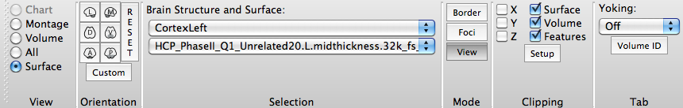

Surface View
Surface View displays the medial and lateral sides of left and
right hemisphere surfaces in one Viewing
Tab.
In Surface View the Toolbar looks like this:

- Orientation contains buttons to
set orthogonal and User-defined views of the brain surface
displayed: L (lateral), M (medial), D (dorsal),
V (ventral), A
(anterior), and P (posterior).
- The Reset button resets the
orientation/zoom to the default.
- Custom
Orientation allows one to set and save (or
not) a specific transform (pan, rotate, oblique rotate,
zoom) for a surface or volume.
- Selection contains pull-downs to
set the brain structure (top) and surface (bottom) to view.
- Clipping
contains settings for cutting down Surface, Volume, or
Features data to be viewed.
- Tab
contains cross-tab functions for yoking the display of two or
more Viewing Tabs.